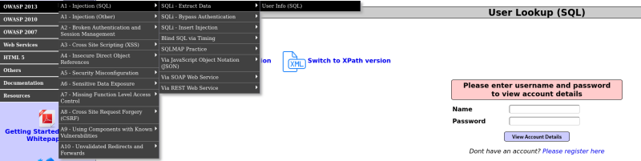
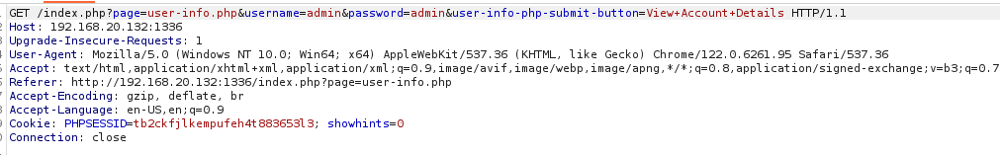
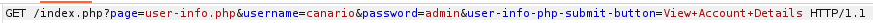
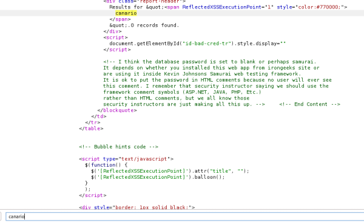
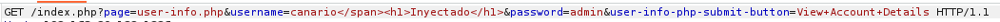
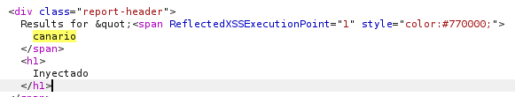
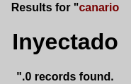
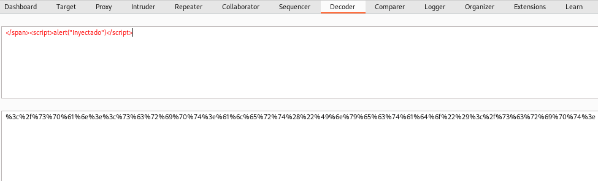
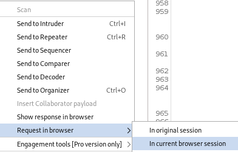
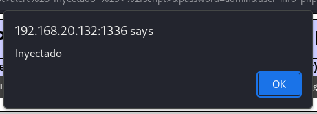

De manera general, la mayoría de las vulnerabilidades que vamos a encontrarnos cuando nosotros tenemos como objetivo una aplicación web, van a ser vulnerabilidades que tienen que ver con la inyección de código.
Por lo tanto, para que pueda haber una inyección de código, tiene que haber algún campo dentro de la página web en el que nosotros podamos interactuar con esa aplicación objetivo.
Si nos estuviésemos enfrentando a una página estática o una página web que no tiene ningún punto de inyección, que no tiene ninguna manera con la que un usuario puede interactuar con ella, simplemente es una página que está mostrando algo, pero no tiene ni formularios, probablemente no vayamos a encontrar vulnerabilidades web en esa página y lo mejor sería afrontar el ataque desde el punto de vista de las vulnerabilidades que puede tener el sistema que alberga esa página.
Por ejemplo, en mutillidae:

Se muestran campos de entrada para hacer login, sin embargo hay más cosas que no se muestran únicamente en la interfaz.
Si interceptamos con BurpSuite:

Vemos varios campos de inyección como los de la URL por ser una petición GET.
Además de las cabeceras de información vemos las cookies que es potencialmente otro punto.
Normalmente vamos a tener 3 puntos de inyección en una petición:
Lo que vamos a tratar de hacer es inyectar valores en estos puntos que consigan interactuar con la aplicación de destino y explotar algún problema de seguridad.
Lo que diferencia un fallo de seguridad de otro fallo de seguridad; por ejemplo, un SQL inyección de un crossite scripting es el contexto en el que estamos realizando esa inyección de código.
Otros conceptos básicos y necesarios son:
Para ver cómo responde el servidor y donde se ha realizado la inyección de código utilizamos una palabra clave que metemos para que cuando se reciba la respuesta del servidor podamos buscar en el código donde se ha inyectado nuestro código.
Es importante que sea sencillo, letras y números nada de caracteres especiales.
Por ejemplo:


Esto indica que un parámetro que nosotros le estamos indicando el servidor lo está usando para para inyectarlo en otro documento que nos devuelve.
Volviendo con el concepto anterior y sabiendo que el canario aparece debemos tener en cuenta en que contexto aparece.
En el caso de arriba lo hace como texto HTML.
Sabiendo el contexto ya podemos empezar a pensar como interferir en el comportamiento de esa aplicación.
Por ejemplo: 


Si pasamos parámetros de script como es lo más normal:
Lo podemos codificar en URL


